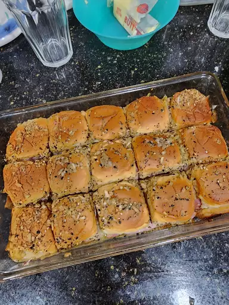

Baked Ham and Cheese Sliders

These baked ham and cheese sliders are the most delicious sandwiches and perfect for any party. They are so good that even the pickiest of eaters will eat these.
Ingredients
- 3/4 cup melted butter
- 1 1/2 tablespoons Dijon Mustard
- 1 1/2 teaspoons Worcestershire sauce
- 1 1/2 tablespoons poppy seeds
- 1 tablespoon dried minced onion
- 24 mini sandwich rolls
- 1 pound thinly sliced cooed deli ham
- 1 pound thinly sliced swiss cheese
steps
- gather all Ingredients
- Preheat the oven to 350 degrees F (175 degrees C). Grease a 9x13-inch baking dish.
- Mix butter, Dijon mustard, Worcestershire sauce, poppy seeds, and dried onion in a bowl.
- Mix butter, Dijon mustard, Worcestershire sauce, poppy seeds, and dried onion in a bowl.
- Place the tops of the rolls onto the sandwiches. Pour mustard mixture evenly over the rolls
- Bake in the preheated oven until the rolls are lightly browned and the cheese has melted, about 20 minutes. Slice into individual rolls through the ham and cheese layers to serve.